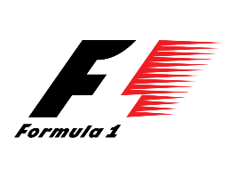

ANA SAYFA
KAYIT SAYFASI
TUR YAPISI VE TURLAR
Formula 1 yarışları, pistin uzunluğuna bağlı olarak belirli sayıda turdan (lap) oluşur.
Yarışın toplam mesafesi genellikle 305 km’yi geçecek şekilde ayarlanır (Monaco GP hariç).
Yarış sırasında farklı tur yapıları vardır ve her turun önemi farklıdır.
F1’de Tur Türleri
- Sıralama Turları (Qualifying Laps)
- Yarıştan bir gün önce yapılır.
- Pilotların en hızlı turu atarak yarışa hangi sıradan başlayacağını belirler.
- Sprint hafta sonlarında farklı bir format uygulanır.
- Isınma Turu (Formation Lap)
- Yarış başlamadan önce pilotlar motorlarını ve lastiklerini ısıtmak için bir tur atarlar.
- Start pozisyonlarına geri dönerler ve yarış start alır.
- Yarış Turları (Race Laps)
- Yarışın ana turlarıdır ve genellikle 50-70 tur arasında değiş
- Hava durumu, lastik aşınması ve yakıt yönetimi gibi faktörler yarışın temposunu etkiler.
- Yarış Turları (Race Laps)
- Yarışın ana turlarıdır ve genellikle 50-70 tur arasında değişir.
- Hava durumu, lastik aşınması ve yakıt yönetimi gibi faktörler yarışın temposunu etkiler.
- Güvenlik Aracı Turları (Safety Car Laps)
- Kaza veya pist üzerindeki tehlikeli durumlar nedeniyle güvenlik aracı piste girer.
- Pilotlar güvenlik aracının arkasında düşük hızda giderler ve yarış duraklatılmış olur.
- Pit Stop Turları
- Lastik değişimi ve strateji gereği pite girilen turlardır.
- Pit stop sırasında zaman kaybı yaşanmaması için en uygun tur seçilir.
- En Hızlı Tur (Fastest Lap)
- Yarış içinde bir pilotun attığı en hızlı tur zamanıdır.
- 2019’dan beri, ilk 10 içinde yer alan pilotlardan biri en hızlı turu atarsa fazladan 1 puan kazanır.
- Son Tur (Final Lap)
- Yarışın bitmesine 1 tur kala lider pilot için beyaz bayrak gösterilir.
- Pilotlar son bir kez tüm güçleriyle mücadele eder.
Formula 1 Yarışlarındaki Ortalama Tur Sayıları
| Grand Prix |
Pist Uzunluğu (km) |
Toplam Tur Sayısı |
Yarış Mesafesi (km) |
| Bahreyn GP |
5.412 |
57 |
308.238 |
| Suudi Arabistan GP |
6.174 |
50 |
308.450 |
| Türkiye GP |
5.338 |
58 |
309.396 |
| Japonya GP |
5.807 |
53 |
307.471 |
| Miami GP |
5.412 |
57 |
308.326 |
| İspanya GP |
4.657 |
66 |
307.236 |
| Kanada GP GP |
4.361 |
70 |
305.270 |
| İngiltere GP |
5.891 |
52 |
306.198 |
| Macaristan GP |
4.381 |
70 |
306.630 |
| Belçika GP |
7.004 |
44 |
308.052 |
| İtalya GP |
5.793 |
53 |
306.720 |
| Singapur GP |
4.928 |
61 |
300.000 |
| ABD GP |
5.513 |
56 |
308.405 |
| Meksika GP |
4.304 |
71 |
305.354 |
| Brezilya GP |
4.309 |
71 |
305.879 |
| Las Vegas GP |
6.120 |
50 |
306.000 |
| Abu Dhabi GP |
5.281 |
58 |
306.183 |